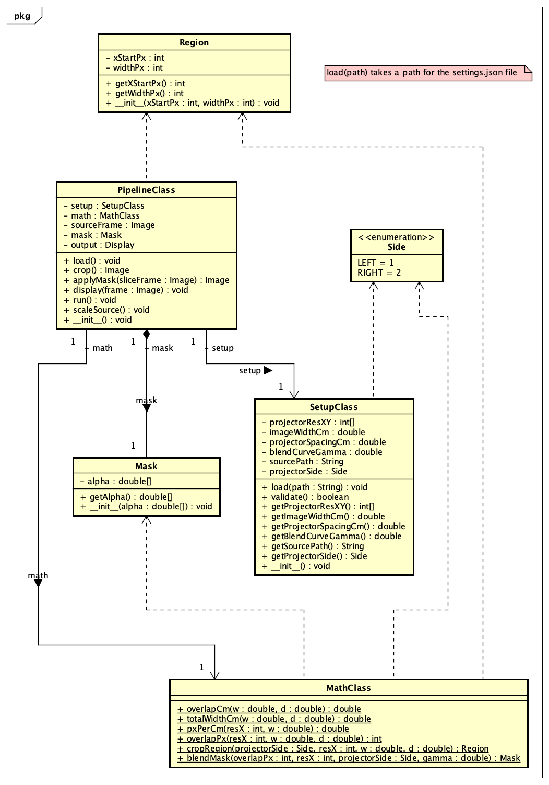
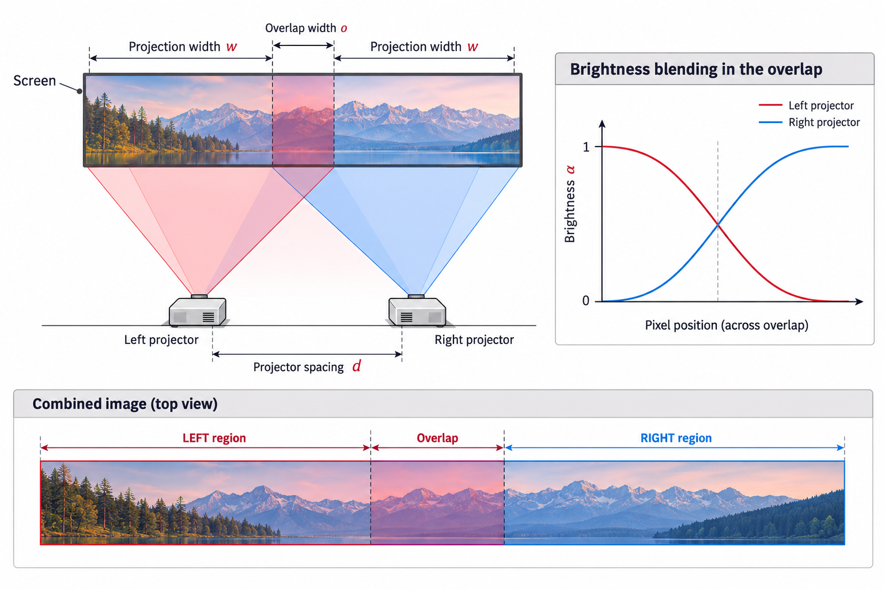

Welcome to the documentation for the Dual-Projector Projection System.
This project coordinates two projectors to display a combined image across a screen. The projected regions overlap, and a blending mask adjusts brightness in that overlap to make the combined image appear more continuous.
System overview
The system uses the projector configuration, screen geometry, and selected projector side to determine which part of the combined image each projector displays. A blending mask controls the brightness of pixels in the overlap region.
Key terms:
- Projection width (w): width, in centimetres, covered by one projector on the screen.
- Projector spacing (d): distance, in centimetres, between the two projectors.
- Overlap: screen region illuminated by both projectors.
- overlapPx: overlap width expressed as a whole number of pixels.
- Region: the horizontal part of the combined image assigned to one projector.
- Mask: a list of brightness multipliers from 0 (black) to 1 (full brightness).
- Gamma (gamma): parameter that shapes the brightness fade across the overlap.
UML class diagram
The diagram below shows the main classes, their relationships, and the methods documented in this project.

UML class diagram for the dual-projector system
Projector geometry and blending
This digital illustration summarizes the two-projector arrangement, the overlap on the screen, the opposing brightness fades, and how the combined image is divided into left, overlap, and right regions.

Digital illustration of projector geometry and overlap blending
Main classes
- PipelineClass coordinates the image-processing pipeline.
- SetupClass loads and validates settings such as projector resolution, image width, projector spacing, blending gamma, source path, and projector side.
- MathClass calculates overlap width, total projection width, pixel density, overlap pixels, image regions, and blending masks.
- Region represents a horizontal region using its starting pixel and width.
- Mask stores per-column brightness multipliers.
- Side identifies the left (LEFT = 1) or right (RIGHT = 2) projector.
Documentation navigation
Use the class list and file list generated by Doxygen to browse the API documentation. Start with MathClass for geometry and mask calculations, or SetupClass for configuration loading and validation.
 1.18.0
1.18.0